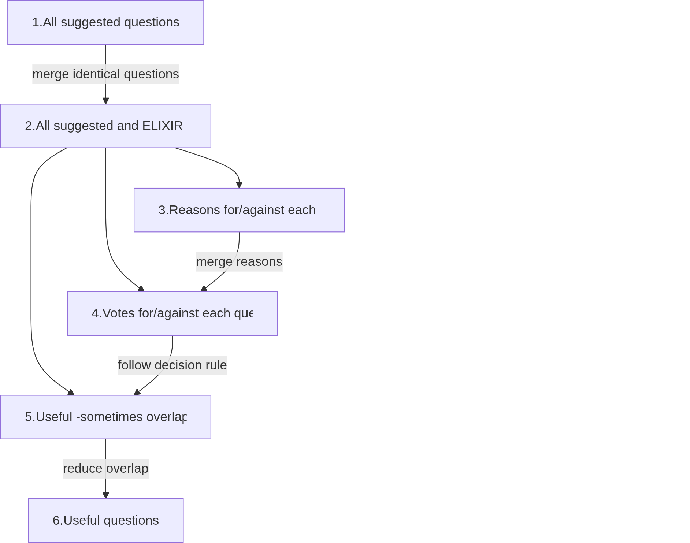

3.3. Methods 3¶
Which research question does this answer?
This part of the methods is related to RQ3:
Which ELIXIR evaluation questions are concluded from a fully transparent process?
To find out which evaluation questions are concluded
from a fully transparent process,
we use a procedure that involves multiple phases (as shown
in figure M3-F1, each having goals as shown
in table M3-T1

Figure
M3-F1. Overview of the procedure
| Phase | Goal |
|---|---|
| 1 | Collect all questions that are considered 'good' by at least 1 NBIS trainer |
| 2 | Collect all questions that are considered 'good' by NBIS and ELIXIR |
| 3 | Collect all reasons for and against each question |
| 4 | Rate all questions |
| 5 | Select the questions that are considered good by the NBIS community |
| 6 | Merge overlapping questions |
Table
M3-T1: goals of each phase in the procedure
Here each step of the procedure is described.
3.3.1. Phase 1¶
The goal of phase 1 is to collect all questions that are considered 'good' by at least 1 NBIS trainer.
To do so, trainers need to
- be aware of this experiment
- know the goals of ELIXIR
- be invited to submit their questions
- do this before a deadline
At an NBIS Training Liaison meeting, introduce this procedure to the people involved in training, as well as advertise in the relevant communication channels. Present, or share an online presentation online that shows the rationale behind this experiment, as well as the goals of ELIXIR.
In an online anonymous survey, repeat the rationale of this experiment, as well as the ELIXIR goal of the evaluation.
Set a deadline of several weeks. Remind trainers to submit 1 week before the deadline ends.
Collect all questions that teachers think are useful anonymously, creating data_set_1_raw.csv.
If less than 10 questions are collected, this experiment is cancelled. If more than 10 questions are collected, the authors of this paper are allowed to add their favorite questions too.
How does that data set look like?
Here is an example:
As there may be duplicates in the data set, remove the duplicates transparently, creating data_set_1.csv and describe the process to do so in data_set_1_merge.md.
How does that data set look like?
Here is an example:
How does the process description look like?
Here is an example:
# Data set 1 merge
There were 5 questions.
Of those 5, here are 2 questions with different spelling:
```text
What is your favorite color?,Open question
What is your favorite colour?,Open question
```
RJCB removed the one with `colour`, resulting in 4 questions.
Of the remaining 4, here are 2 identical questions:
```text
What is your favorite animal?,Open question
What is your favorite animal?,Open question
```
RJCB removed one of these duplicates, resulting in 3 questions.
Where is the processing of raw data described?
3.3.2. Phase 2¶
Combine Data Set 1 with the current NBIS questions.
Shuffle these questions
randomly,
creating data_set_2.csv
How does that data set look like?
Here is an example:
3.3.3. Phase 3¶
- Per question, as the teachers anonymously for reasons why they would be for or against each question. The collection of reasonings per questions results in data_set_3.csv
How does that data set look like?
Here is an example:
question,reply,vote,reason
What is your favorite color?,orange;red,Con,Irrelevant to the course
Would you recommend the course?,Yes;No;Maybe,Con,This is irrelavant for course quality
Would you recommend the course?,Yes;No;Maybe,Pro,This is a good proxy for course quality
What is your favorite animal?,Open question,Con,Irrelevant to the course
What is your favorite animal?,Open question,Pro,Would be nice to know
What is your favorite color?,Open question,Con,Irrelevant to the course
3.3.4. Phase 4¶
- Per question, and its pros and cons, vote anonymously if the question is useful enough to be included in a survey. Allow 'no', 'yes' and neutral data_set_4.csv
How does that data set look like?
Here is an example:
question,reply,vote
What is your favorite color?,orange;red,No
What is your favorite color?,orange;red,No
What is your favorite color?,orange;red,Neutral
Would you recommend the course?,Yes;No;Maybe,No
Would you recommend the course?,Yes;No;Maybe,Yes
Would you recommend the course?,Yes;No;Maybe,Yes
What is your favorite animal?,Open question,No
What is your favorite animal?,Open question,No
What is your favorite animal?,Open question,Yes
What is your favorite color?,Open question,No
What is your favorite color?,Open question,No
What is your favorite color?,Open question,Neutral
3.3.5. Phase 5¶
From the questions and votes, select the set of questions that had more 'yes' than 'no' votes: these are the questions that this NBIS community thinks are useful.
How does that data set look like?
From the example data, this would be the result:
The results can be found at data_set_5.csv.
3.3.6. Phase 6¶
From the questions that had more 'yes' than 'no' votes, merge potential overlap in questions.
The results can be found at data_set_6.csv.